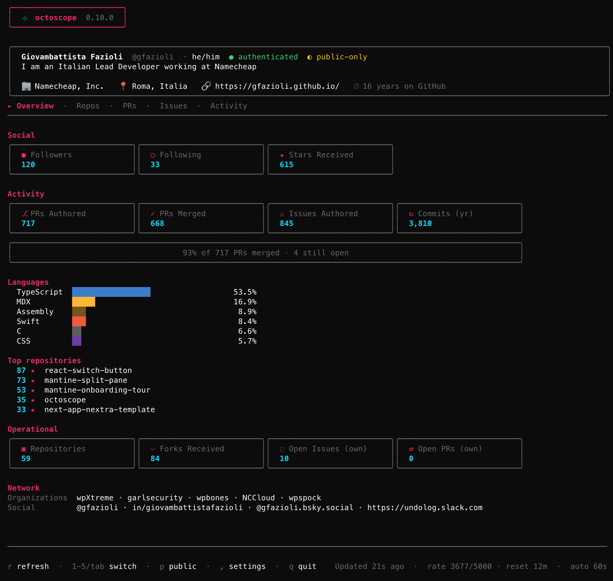

A native TUI that pulls profile, activity, repo health and network from the GitHub GraphQL API and keeps them current in the background. Works for your own account, or any public profile.

Name, login, pronouns, bio, company, location, website, and how many years you've been on GitHub.
Followers, following, and total stars received across your non-fork repositories.
Lifetime PRs authored and merged, issues opened, commits in the last year, plus a languages bar coloured with GitHub's own hex palette.
Public repositories, forks received, open issues and open PRs across everything you own.
Organisations you're a member of and verified social accounts — X, LinkedIn, Bluesky, Mastodon.
Run with no arguments for your own dashboard (with a token), or pass any GitHub username to see their public stats — octoscope torvalds, octoscope dhh, whoever.
When a value changes between refreshes — a new star arrives, someone follows, a PR merges — the affected card's border flashes accent-pink for two seconds. No diffing numbers with your eyes.
Changes to your Stars and Followers trigger a native system notification and a short beep. You notice passive attention even when octoscope is in a background tab. macOS, Linux and Windows — no configuration needed.
$ brew install gfazioli/tap/octoscope$ go install github.com/gfazioli/octoscope@latest
Grab a platform archive from the latest GitHub Release and drop the binary on your $PATH.
$GITHUB_TOKEN first, then falls back to
gh auth token. A token is effectively required if you keep
the dashboard open for more than a few minutes — the unauthenticated GitHub rate limit
(60/hour) won't survive the 60-second auto-refresh loop.
$ octoscope$ octoscope torvalds
$ octoscope gvanrossum
$ octoscope gfazioli
While running: r refreshes on demand,
q quits. Auto-refresh ticks every 60 seconds.
Your support helps me:
Open source thrives when those who benefit can give back — even a small monthly contribution makes a real difference. Sponsorships help cover maintenance time, infrastructure, and the countless invisible tasks that keep a project healthy.
Your help truly matters.
💚 Become a sponsor today and help me keep this project reliable, up-to-date, and growing for everyone.
Some things on your GitHub profile page aren't exposed by the GraphQL or REST APIs, so octoscope doesn't show them — achievements (Pull Shark, Starstruck, YOLO…), Highlights like the PRO badge, and the local time next to the location field. Surfacing any of these would require scraping the profile HTML, which we don't do.